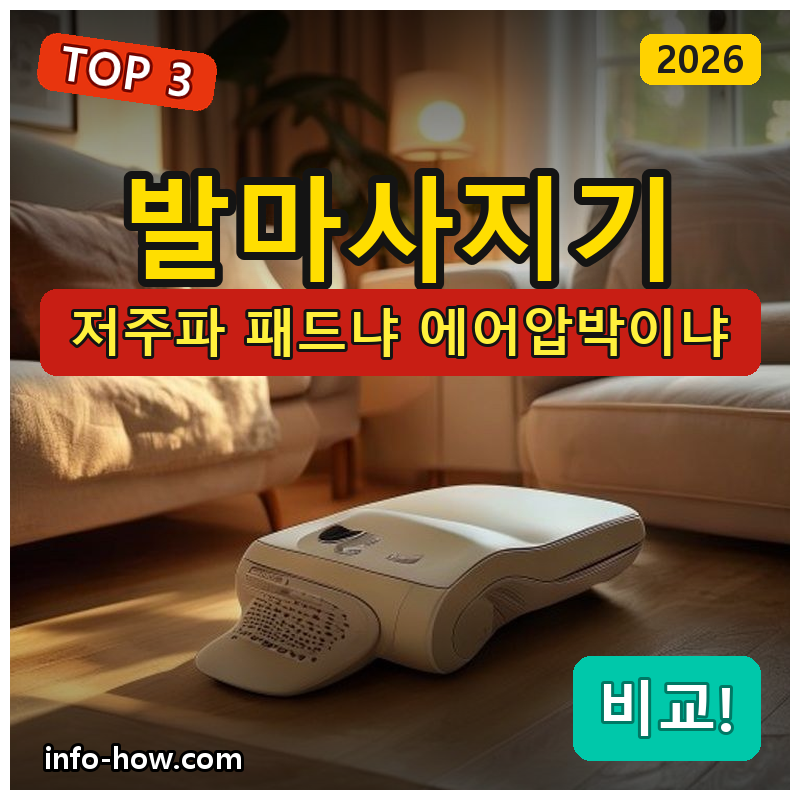
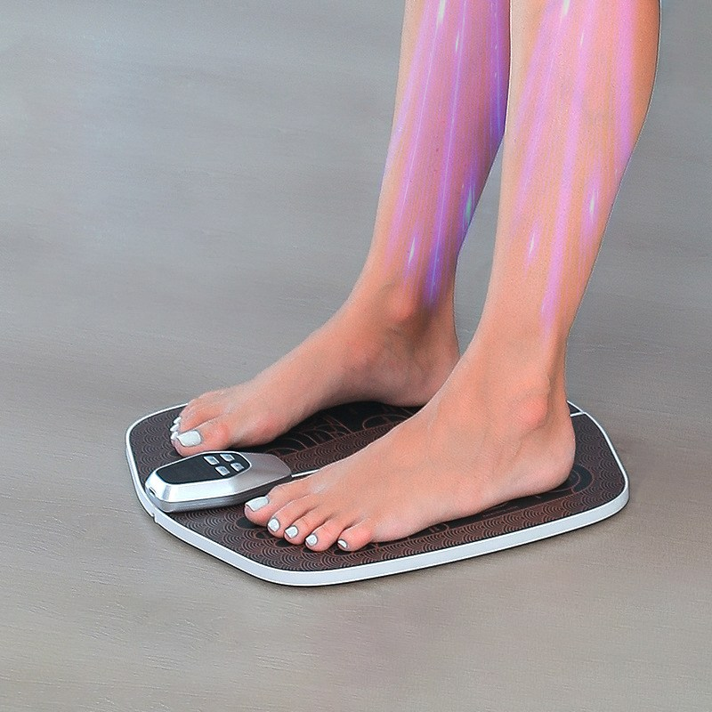
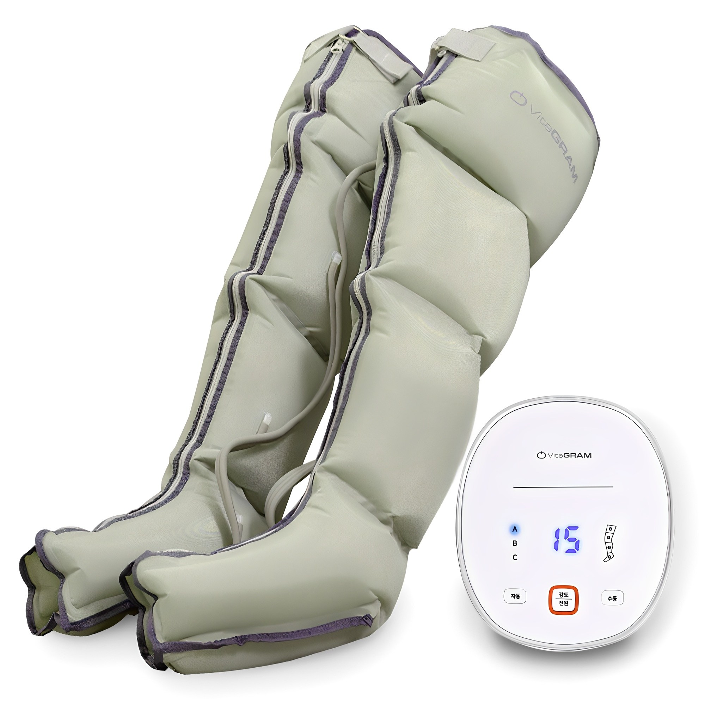
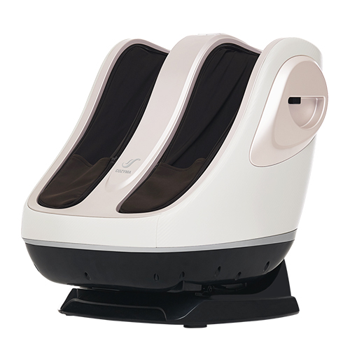

홈 › 제품리뷰 › 뷰티/헬스
발마사지기, 저주파 패드냐 에어압박이냐
작성: 생활서식 모음 · 2026-07-19

파트너스 활동의 일환으로 일정액의 수수료를 지급받습니다
🛒 오늘의 쿠팡 특가 보러가기 →
발마사지기, 종류가 달라 뭘 살지 헷갈리죠?
핵심은 "방식(저주파/에어)과 강도, 부위" 3대 를※ 발마사지기는 피로 완화·휴식용 기기이며, 질병 치료 목적이 아닙니다.
📋 목차
발마사지기, 저주파 패드냐 에어압박이냐 — 결론 먼저 스펙 비교표: 한눈에 보기 발마사지기 고를 때 봐야 할 4가지 패드냐 에어압박이냐, 뭘 사야 할까? 자주 묻는 질문 (FAQ) 결론: 한 줄 요약
발마사지기, 저주파 패드냐 에어압박이냐 — 결론 먼저
발마사지기는 "저주파 패드냐, 감싸는 에어압박이냐" 로 갈려요.비타그램 에어압박 이 무난합니다. 저렴하게 발바닥만 자극하면 저주파 패드, 지압+에어까지 제대로면 코지마 프리미엄입니다.
1 발바닥·입문 (가성비 초이스)
가성비

2만원 이하 저주파 패드
1. KORELAN 저주파 발마사지기
2만원 이하 저주파 패드 발바닥에 올려 미세전류 자극 얇아 보관·휴대 편함
감싸는 형은 아니어도
추천 대상
저렴하게 발바닥 피로를 풀고 싶은 분 얇은 패드형으로 보관이 편한 걸 원하는 분 가볍게 미세전류 자극을 경험할 분 장점
2만원 이하로 부담 없이 발마사지기를 마련 발바닥에 올려 저주파(미세전류)로 자극 패드형이라 얇고 가벼워 보관·사용이 간편 단점
발을 감싸는 에어압박형의 시원함·종아리 커버는 아님 이 제품은 발바닥 저주파 입문용 입니다. 발을 감싸는 시원함·종아리까지면 2번 에어압박, 지압+에어 제대로면 3번으로 가세요. "발바닥만 저렴하게"면 가성비 최고입니다.
한줄 리뷰
"발바닥이 피곤한데 저렴하게"면 저주파 패드가 부담 없습니다. 얇아 보관도 편하고요. 발을 감싸는 시원함이나 종아리까지 원하면 2·3번을 보세요.
주요 스펙
제품: KORELAN 저주파 발마사지기 방식: 저주파(미세전류) 패드 부위: 발바닥 배송: 로켓배송 가격: 약 18,900원 (변동 가능) ※ 실제 스펙·가격과 차이가 있을 수 있습니다
2 감싸는 에어압박 (베스트 초이스)
베스트

에어압박 4방
2. 비타그램 에어그라운드 플러스 발마사지기
발을 감싸는 에어압박 4방향 공기압 자극 종일 서서 일한 발에
발을 넣으면 감싸서 눌러주는
추천 대상
종일 서서 일해 발이 붓고 피곤한 분 발을 감싸는 시원한 압박을 원하는 분 패드형보다 확실한 마사지를 원하는 분 장점
발을 넣으면 공기압이 감싸 눌러줘 시원한 압박감 4방향 자극으로 발 전체를 고르게 커버 종일 서서 일한 뒤 발 피로 이완에 도움 단점
패드형보다 부피가 크고, 코지마급 지압 강도는 아님 저렴하게 발바닥만이면 1번, 지압+에어까지 제대로면 3번입니다. 2번은 "감싸는 에어압박" 의 실속 구간 — 붓고 피곤한 발에 무난합니다.
한줄 리뷰
"종일 서서 일해 발이 붓는다"는 분에게 감싸는 에어압박이 시원합니다. 발 전체를 눌러줘 만족도가 좋아요. 지압+에어 프리미엄을 원하면 3번을 보세요.
주요 스펙
제품: 비타그램 에어그라운드 플러스 발마사지기 방식: 에어(공기압) 4방향 부위: 발 전체(감싸는 형) 배송: 로켓배송 가격: 약 99,000원 (변동 가능) ※ 실제 스펙·가격과 차이가 있을 수 있습니다
3 지압+에어 프리미엄 (프리미엄)
프리미엄

코지마 지압+에어
3. 코지마 포르테 발마사지기
지압 롤러 + 에어압박 코지마 브랜드 완성도 발바닥·발등 입체 자극
지압 롤러와 에어를 함께
추천 대상
발 마사지를 제대로 받고 싶은 분 지압 롤러+에어 입체 자극을 원하는 분 브랜드 완성도·내구를 중시하는 분 장점
지압 롤러와 에어압박을 함께 써 발을 입체적으로 자극 코지마 브랜드라 완성도·내구가 좋음 발바닥·발등을 고르게 눌러 이완에 도움 단점
27만원대로 가격이 높고, 크고 무거워 자리를 차지함 저렴하게면 1번, 감싸는 에어압박 실속이면 2번이 합리적입니다. 3번은 지압+에어 제대로·브랜드 를 원하는 분에게 값어치가 있습니다.
한줄 리뷰
"발 마사지를 제대로 받고 싶다"면 지압 롤러+에어의 코지마가 만족스럽습니다. 입체 자극이 확실해요. 다만 가격·부피가 있으니, 가볍게면 1·2번이 합리적입니다.
주요 스펙
제품: 코지마 포르테 발마사지기 방식: 지압 롤러 + 에어압박 부위: 발바닥·발등 입체 배송: 일반배송 가격: 약 279,000원 (변동 가능) ※ 실제 스펙·가격과 차이가 있을 수 있습니다
스펙 비교표: 한눈에 보기
가격·풍량·무게 중 본인에게 중요한 기준부터 보세요. "최고" 표시는 3제품 중 객관적 1위 값입니다.
← 좌우로 스크롤 →
발마사지기 고를 때 봐야 할 4가지
방식·부위만 맞춰도 "감싸는 맛 없거나 과한" 실패를 막습니다.
1) 방식 — 저주파 vs 에어 vs 지압
저주파 패드: 발바닥에 올려 미세전류 자극, 저렴·얇음에어압박: 발을 감싸 공기압으로 눌러줌, 시원함지압 롤러: 발바닥을 눌러 굴리는 입체 자극2) 부위 — 발바닥만? 종아리까지?
발바닥 위주면 패드·발전용으로 충분 붓기·종아리까지면 종아리 겸용/에어압박 제품 쓰려는 부위에 맞는 형태를 우선 3) 강도·온열 — 취향과 안전
강도 조절 단계가 있으면 부담을 조절 가능 온열이 있으면 이완에 도움 자극에 민감하면 약하게 시작 4) 크기·보관 — 자리와 사용 편의
에어·지압 제품은 부피가 커 보관 공간이 필요 패드형은 얇아 보관·휴대가 편함 자주 쓸 위치(거실 등)와 자리를 함께 고려 패드냐 에어압박이냐, 뭘 사야 할까?
방식 취향과 예산만 정하면 답이 나옵니다.
발바닥·저렴하게: 1번 KORELAN 저주파 → 2만원 이하감싸는 에어압박: 2번 비타그램 → 붓고 피곤한 발지압+에어 제대로: 3번 코지마 → 프리미엄자주 묻는 질문 (FAQ)
Q1. 저주파 패드형이랑 에어압박형, 뭐가 다른가요? 자극 방식이 다릅니다. 저주파 패드형은 발바닥에 올려 미세전류로 자극하는 방식이라 얇고 저렴하지만 발을 감싸는 압박감은 없습니다. 에어압박형은 발을 넣으면 공기압이 발을 감싸 눌러줘 시원한 압박감이 있고 발 전체를 커버합니다. 저렴하게 발바닥만 자극하려면 패드형, 감싸는 시원함을 원하면 에어압박형을 고르세요.
Q2. 종일 서서 일해서 발이 붓는데 어떤 게 좋나요? 발을 감싸 눌러주는 에어압박형이 만족도가 높은 편입니다. 공기압이 발 전체를 감싸 눌러 부기·피로 완화 휴식에 도움이 됩니다. 종아리까지 붓는다면 종아리 겸용 제품도 고려하세요. 다만 붓기가 심하고 지속되거나 통증이 동반되면 단순 피로가 아닐 수 있으므로 병원 진료를 받는 것이 안전합니다.
Q3. 저주파(미세전류) 자극은 안전한가요? 일반적인 사용에서는 대체로 무리가 없지만 주의가 필요한 경우가 있습니다. 심장 박동기 등 체내 의료기기를 착용한 분, 임신 중인 분, 심장 질환이 있는 분은 저주파(전기 자극) 기기 사용을 피하거나 전문가와 상담해야 합니다. 제품 설명서의 주의사항을 꼭 확인하고, 이상 감각이 있으면 즉시 사용을 멈추세요.
Q4. 하루에 얼마나 쓰는 게 좋나요? 제품이 권장하는 시간(보통 한 번에 10~20분 내외)을 따르는 것이 기본입니다. 같은 부위를 너무 오래 강하게 자극하는 것은 피하고, 사용 후 발이 시원하고 편안한 정도가 적당합니다. 발마사지기는 피로 완화·휴식을 돕는 기기이므로, 통증이 있거나 사용 후 불편함이 남으면 강도를 낮추거나 사용을 멈추세요.
Q5. 당뇨가 있는데 발마사지기를 써도 되나요? 주의가 필요합니다. 당뇨가 있으면 발의 감각이 둔해져 있을 수 있어, 너무 강한 자극이나 온열에 화상·상처를 인지하지 못할 위험이 있습니다. 또 혈액순환 관련 주의도 필요합니다. 당뇨·혈관 질환·발 상처 등이 있다면 발마사지기 사용 전 반드시 담당 의사와 상담하세요. 안전이 최우선입니다.
결론: 한 줄 요약
1) KORELAN 저주파 패드 — 약 18,900원 / 발바닥·입문. 2만원 이하, 얇고 보관 편함.2) 비타그램 에어압박 — 약 99,000원 / 감싸는 압박. 붓고 피곤한 발에 시원.3) 코지마 포르테 — 약 279,000원 / 지압+에어. 발 마사지 제대로, 브랜드 완성도.이 포스팅은 쿠팡 파트너스 활동의 일환으로, 이에 따른 일정액의 수수료를 제공받습니다.